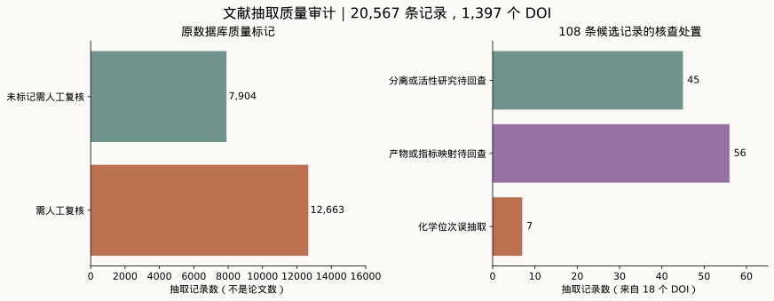

护肤相关筛查
使用固定的五种护肤成分参照，比较同一模型、同一终点；保留跨平台分歧。
我们探索液液相分离能否改善微生物生产光甘草定，并用可追溯证据检验护肤用途、资源消耗和环境影响。
核心实验比较是：低表达 OC/DMT、无相分离的基线组 G1，与相同背景的相分离组。我们希望检验生产效率是否改善，以及改善是否足以抵消额外的表达、培养和纯化负担。
使用固定的五种护肤成分参照，比较同一模型、同一终点；保留跨平台分歧。
核查 20,567 条抽取记录，登记错配风险，并补充两篇原始生产研究。
计算纯产物增益与资源增量之间的关系，帮助确定实验目标。
尚无本项目匹配组产率、纯度、资源清单和配方安全结果。
本轮继续完成的是数据分析和实验设计。模型记录来自已实际执行并保存的运行；本次重建页面读取这些结果，没有把读取缓存写成重新运行模型，也没有把实验计划写成湿实验完成。
原始数据库含 20,567 条记录、551 个字段和 1,397 个不同 DOI。其中 12,663 条（61.6%）被源数据库标记为需要人工复核。
以标题、最终产物字段和结果证据句中的“glabridin”为候选检索条件，得到 108 条记录、18 个 DOI；仅标题命中涉及 1 个 DOI。这只是当前数据库的覆盖情况，不能推出全球只有一篇研究，也不能证明光甘草定研究总体稀少。

以下两篇论文均不在本次输入数据库中，单独作为外部补充。按生产路线和尺度分列；没有进行跨条件优劣排名或合并平均。
| 研究 | 生产条件类别 | 文献滴度（mg/L） | 本项目如何使用 |
|---|---|---|---|
| 张等，2026：生物合成网络 | 工程酿酒酵母，从葡萄糖从头合成，摇瓶 | 0.5 | 作为从头合成可行性和分析灵敏度的背景参考；不同菌株与工艺，不能推算本项目增益。 |
| 张等，2026：生物合成网络 | 工程酵母，前体补料后的多路径修饰模块 | 0.9 | 与葡萄糖从头合成分列；支持跟踪中间体与泄漏，不能把前体成本忽略。 |
| 邓等，2026：模块组装 | 二倍体酿酒酵母，从葡萄糖从头合成 | 0.24 | 外部技术可行性参考；无统一条件，不作优劣排名。 |
| 邓等，2026：模块组装 | 从葡萄糖从头合成，5 L 生物反应器验证 | 1.2 | 提示规模和工艺条件必须记录；不能据此宣称本项目已达到该产率。 |
原始来源：生物合成网络研究（2026）；酵母模块组装研究（2026）。表中滴度不是分离产物质量、质量收率或本项目生产结果。
候选筛选不是系统综述。下一轮需预先记录检索库、完整检索式、检索日期和纳排规则，补充“光甘草定／甘草／提取／发酵／溶剂／生命周期”等中英文词，并进行引用追踪和重复核查。
暂按非喷雾、留敷型面部护肤原料评价。ADMET-AI 作为主要计算框架，理由是本地五成员结果可复现、任务覆盖明确；其他平台用于补充终点和检查分歧。选择依据与结果是否有利无关。
保留 17 项任务：3 项主要危害、2 项配方性质和 12 项受体／细胞应答。口服吸收、血脑屏障和常规药代任务退出当前主要叙事；长期和全身效应仍需结合经皮暴露评估。参照组在比较结果前按用途、分子身份和公开安全资料确定，不因分数不利而更换。
| 参照成分 | 已有安全资料及适用边界 |
|---|---|
| α-熊果苷 | SCCS 支持面霜不超过 2%、身体乳不超过 0.5% 的指定用途；需控制氢醌痕量。 |
| 烟酰胺 | CIR 2005 支持所评估的化妆品用法；报告包含最高 5% 的人体刺激性试验。2% 和 5% 的色素研究提供用途参照，均不是通用安全上限。 |
| 抗坏血酸葡糖苷 | CIR 支持报告所述用法和浓度；非喷雾面颈产品报告用量最高 5%。该评估未覆盖以皮肤脱色为目的的使用。 |
| 曲酸 | SCCS 最终意见支持不超过 1% 的指定美白用途；EU 2024/996 限面部和手部产品。皮肤屏障受损或去角质场景需额外关注。 |
| β-熊果苷 | SCCS 支持面霜不超过 7% 的指定用途，并要求控制氢醌痕量；不能把 α/β 两者当作独立安全证据票数。 |
资料来源：熊果苷评估、烟酰胺评估、抗坏血酸葡糖苷评估、曲酸评估。这些浓度是特定资料的使用／评估条件，不是光甘草定的安全浓度，也不是中国市场的合规结论。

目前的实际结论：光甘草定的 ADMET-AI 致癌性分数为 0.053，低于部分参照；细菌回复突变分数为 0.298，处于参照范围内。但皮肤反应／致敏分数为 0.755，高于全部五种参照。结果支持确定后续验证重点，不能概括为“比常见护肤成分更安全”。

| 模型／工具 | 实际输出 | 如何解释 |
|---|---|---|
| Chemprop 原子解释 | 已解释细菌回复突变、皮肤反应和致癌性三项任务；六分子 × 三任务 × 五成员，共 90 项数值完整性检查。 | 显示原子特征对指定模型输出的相对贡献；不是另一份独立毒性证据，也不是因果致毒基团。 |
| MapLight（无图神经网络版本） | 光甘草定细菌回复突变分数 0.217，五成员标准差 0.044。使用分子指纹／描述符和 CatBoost。 | 补充另一种建模框架。图神经网络扩展尚未运行，不记作已完成。 |
| ADMETlab | 光甘草定皮肤致敏 0.851、细菌回复突变 0.715、眼刺激 0.983。 | 致突变判断与 ADMET-AI／MapLight 存在分歧；眼刺激应纳入验证。 |
| admetSAR | 光甘草定皮肤致敏 0.743、眼刺激 0.797、细菌回复突变 0.234；另有光毒、光致刺激和光过敏任务。 | 补充局部接触及光相关终点；三个光相关任务不能混为同一结论。 |
| ProTox | 致癌和致突变均报告非活性、类别置信度各 0.67；生态毒性报告活性、置信度 0.59。 | 置信度对应所报告类别，不能当作阳性概率；生态信号仍需暴露信息。 |
| VEGA、EPI Suite、ECOSAR | 提供降解、富集和水生毒性预测；多项存在适用域或结构范围限制。 | 用于设计排放控制与验证优先级，详见环境部分。 |
ADMET-AI 与 Chemprop 解释属于同一预测链，不能计作两个独立模型的一致证据。ADMETlab、admetSAR、ProTox、VEGA 和 EPA 工具在本次页面更新中使用已核实的既有导出结果。


光甘草定在线粒体膜电位、抗氧化应答及多项受体任务上高于当前参照组。需要通过相关实验区分特定作用、细胞毒性和试验干扰；不能直接推出人体内分泌干扰或美白功效。
| 化合物 | 模型 | 任务 | 原生输出均值 | 五成员标准差 |
|---|---|---|---|---|
| 光甘草定 | ADMET-AI | 细菌回复突变 | 0.297781 | 0.037161 |
| 光甘草定 | ADMET-AI | 致癌性筛查 | 0.053176 | 0.033896 |
| 光甘草定 | ADMET-AI | 雄激素受体配体结合域 | 0.017916 | 0.012896 |
| 光甘草定 | ADMET-AI | 雄激素受体 | 0.026554 | 0.013488 |
| 光甘草定 | ADMET-AI | 芳烃受体 | 0.543452 | 0.157919 |
| 光甘草定 | ADMET-AI | 芳香化酶 | 0.518780 | 0.127265 |
| 光甘草定 | ADMET-AI | 雌激素受体配体结合域 | 0.511715 | 0.074660 |
| 光甘草定 | ADMET-AI | 雌激素受体 | 0.653144 | 0.090515 |
| 光甘草定 | ADMET-AI | 过氧化物酶体增殖物激活受体γ | 0.076024 | 0.036042 |
| 光甘草定 | ADMET-AI | 抗氧化应答元件 | 0.809183 | 0.059664 |
| 光甘草定 | ADMET-AI | 基因组稳定性应答 | 0.130559 | 0.038353 |
| 光甘草定 | ADMET-AI | 热休克应答 | 0.504733 | 0.139178 |
| 光甘草定 | ADMET-AI | 线粒体膜电位 | 0.956606 | 0.023107 |
| 光甘草定 | ADMET-AI | 肿瘤抑制蛋白 p53 应答 | 0.480942 | 0.093344 |
| 光甘草定 | ADMET-AI | 皮肤反应／致敏 | 0.755438 | 0.041053 |
| α-熊果苷 | ADMET-AI | 细菌回复突变 | 0.333004 | 0.109084 |
| α-熊果苷 | ADMET-AI | 致癌性筛查 | 0.035992 | 0.040635 |
| α-熊果苷 | ADMET-AI | 雄激素受体配体结合域 | 0.029232 | 0.013172 |
| α-熊果苷 | ADMET-AI | 雄激素受体 | 0.064122 | 0.013259 |
| α-熊果苷 | ADMET-AI | 芳烃受体 | 0.025500 | 0.013381 |
| α-熊果苷 | ADMET-AI | 芳香化酶 | 0.017293 | 0.009700 |
| α-熊果苷 | ADMET-AI | 雌激素受体配体结合域 | 0.074254 | 0.020060 |
| α-熊果苷 | ADMET-AI | 雌激素受体 | 0.169941 | 0.052241 |
| α-熊果苷 | ADMET-AI | 过氧化物酶体增殖物激活受体γ | 0.006250 | 0.002702 |
| α-熊果苷 | ADMET-AI | 抗氧化应答元件 | 0.078807 | 0.049967 |
| α-熊果苷 | ADMET-AI | 基因组稳定性应答 | 0.026587 | 0.017742 |
| α-熊果苷 | ADMET-AI | 热休克应答 | 0.008286 | 0.009210 |
| α-熊果苷 | ADMET-AI | 线粒体膜电位 | 0.025800 | 0.018040 |
| α-熊果苷 | ADMET-AI | 肿瘤抑制蛋白 p53 应答 | 0.033787 | 0.014867 |
| α-熊果苷 | ADMET-AI | 皮肤反应／致敏 | 0.348610 | 0.200110 |
| 烟酰胺 | ADMET-AI | 细菌回复突变 | 0.031763 | 0.011926 |
| 烟酰胺 | ADMET-AI | 致癌性筛查 | 0.193410 | 0.059641 |
| 烟酰胺 | ADMET-AI | 雄激素受体配体结合域 | 0.001735 | 0.000827 |
| 烟酰胺 | ADMET-AI | 雄激素受体 | 0.010776 | 0.000931 |
| 烟酰胺 | ADMET-AI | 芳烃受体 | 0.009338 | 0.008533 |
| 烟酰胺 | ADMET-AI | 芳香化酶 | 0.001500 | 0.000765 |
| 烟酰胺 | ADMET-AI | 雌激素受体配体结合域 | 0.001285 | 0.000486 |
| 烟酰胺 | ADMET-AI | 雌激素受体 | 0.029850 | 0.002622 |
| 烟酰胺 | ADMET-AI | 过氧化物酶体增殖物激活受体γ | 0.000442 | 0.000203 |
| 烟酰胺 | ADMET-AI | 抗氧化应答元件 | 0.006097 | 0.004239 |
| 烟酰胺 | ADMET-AI | 基因组稳定性应答 | 0.001135 | 0.000677 |
| 烟酰胺 | ADMET-AI | 热休克应答 | 0.002678 | 0.001429 |
| 烟酰胺 | ADMET-AI | 线粒体膜电位 | 0.000745 | 0.000496 |
| 烟酰胺 | ADMET-AI | 肿瘤抑制蛋白 p53 应答 | 0.000885 | 0.000432 |
| 烟酰胺 | ADMET-AI | 皮肤反应／致敏 | 0.289422 | 0.100810 |
| 抗坏血酸葡糖苷 | ADMET-AI | 细菌回复突变 | 0.264553 | 0.142966 |
| 抗坏血酸葡糖苷 | ADMET-AI | 致癌性筛查 | 0.014999 | 0.022719 |
| 抗坏血酸葡糖苷 | ADMET-AI | 雄激素受体配体结合域 | 0.034842 | 0.028183 |
| 抗坏血酸葡糖苷 | ADMET-AI | 雄激素受体 | 0.052219 | 0.014584 |
| 抗坏血酸葡糖苷 | ADMET-AI | 芳烃受体 | 0.001491 | 0.000962 |
| 抗坏血酸葡糖苷 | ADMET-AI | 芳香化酶 | 0.003211 | 0.002566 |
| 抗坏血酸葡糖苷 | ADMET-AI | 雌激素受体配体结合域 | 0.037404 | 0.019009 |
| 抗坏血酸葡糖苷 | ADMET-AI | 雌激素受体 | 0.125399 | 0.043280 |
| 抗坏血酸葡糖苷 | ADMET-AI | 过氧化物酶体增殖物激活受体γ | 0.002260 | 0.003351 |
| 抗坏血酸葡糖苷 | ADMET-AI | 抗氧化应答元件 | 0.045766 | 0.026722 |
| 抗坏血酸葡糖苷 | ADMET-AI | 基因组稳定性应答 | 0.009252 | 0.007340 |
| 抗坏血酸葡糖苷 | ADMET-AI | 热休克应答 | 0.001556 | 0.001177 |
| 抗坏血酸葡糖苷 | ADMET-AI | 线粒体膜电位 | 0.001827 | 0.000893 |
| 抗坏血酸葡糖苷 | ADMET-AI | 肿瘤抑制蛋白 p53 应答 | 0.023520 | 0.013752 |
| 抗坏血酸葡糖苷 | ADMET-AI | 皮肤反应／致敏 | 0.333438 | 0.206262 |
| 曲酸 | ADMET-AI | 细菌回复突变 | 0.381095 | 0.180216 |
| 曲酸 | ADMET-AI | 致癌性筛查 | 0.272310 | 0.021951 |
| 曲酸 | ADMET-AI | 雄激素受体配体结合域 | 0.011242 | 0.003566 |
| 曲酸 | ADMET-AI | 雄激素受体 | 0.013559 | 0.004458 |
| 曲酸 | ADMET-AI | 芳烃受体 | 0.045351 | 0.032778 |
| 曲酸 | ADMET-AI | 芳香化酶 | 0.003969 | 0.002045 |
| 曲酸 | ADMET-AI | 雌激素受体配体结合域 | 0.013992 | 0.003318 |
| 曲酸 | ADMET-AI | 雌激素受体 | 0.063489 | 0.015413 |
| 曲酸 | ADMET-AI | 过氧化物酶体增殖物激活受体γ | 0.009285 | 0.004046 |
| 曲酸 | ADMET-AI | 抗氧化应答元件 | 0.115063 | 0.043825 |
| 曲酸 | ADMET-AI | 基因组稳定性应答 | 0.013052 | 0.003139 |
| 曲酸 | ADMET-AI | 热休克应答 | 0.027805 | 0.013894 |
| 曲酸 | ADMET-AI | 线粒体膜电位 | 0.017307 | 0.012793 |
| 曲酸 | ADMET-AI | 肿瘤抑制蛋白 p53 应答 | 0.034999 | 0.012753 |
| 曲酸 | ADMET-AI | 皮肤反应／致敏 | 0.594838 | 0.119172 |
| β-熊果苷 | ADMET-AI | 细菌回复突变 | 0.345091 | 0.128556 |
| β-熊果苷 | ADMET-AI | 致癌性筛查 | 0.039781 | 0.043142 |
| β-熊果苷 | ADMET-AI | 雄激素受体配体结合域 | 0.025803 | 0.012106 |
| β-熊果苷 | ADMET-AI | 雄激素受体 | 0.060042 | 0.011636 |
| β-熊果苷 | ADMET-AI | 芳烃受体 | 0.029726 | 0.015029 |
| β-熊果苷 | ADMET-AI | 芳香化酶 | 0.016812 | 0.009677 |
| β-熊果苷 | ADMET-AI | 雌激素受体配体结合域 | 0.064672 | 0.015803 |
| β-熊果苷 | ADMET-AI | 雌激素受体 | 0.159016 | 0.049215 |
| β-熊果苷 | ADMET-AI | 过氧化物酶体增殖物激活受体γ | 0.005467 | 0.002403 |
| β-熊果苷 | ADMET-AI | 抗氧化应答元件 | 0.076607 | 0.047815 |
| β-熊果苷 | ADMET-AI | 基因组稳定性应答 | 0.025123 | 0.018072 |
| β-熊果苷 | ADMET-AI | 热休克应答 | 0.007552 | 0.008044 |
| β-熊果苷 | ADMET-AI | 线粒体膜电位 | 0.026267 | 0.020812 |
| β-熊果苷 | ADMET-AI | 肿瘤抑制蛋白 p53 应答 | 0.031722 | 0.016324 |
| β-熊果苷 | ADMET-AI | 皮肤反应／致敏 | 0.358229 | 0.183754 |
| 光甘草定 | ADMET-AI | 亲脂性数据集预测值 | 3.583479 | 0.285599 |
| 光甘草定 | ADMET-AI | 水溶解度（以 mol/L 为单位取对数） | -4.315408 | 0.322692 |
| α-熊果苷 | ADMET-AI | 亲脂性数据集预测值 | -0.161023 | 0.486479 |
| α-熊果苷 | ADMET-AI | 水溶解度（以 mol/L 为单位取对数） | -0.884434 | 0.242227 |
| 烟酰胺 | ADMET-AI | 亲脂性数据集预测值 | -0.434613 | 0.077651 |
| 烟酰胺 | ADMET-AI | 水溶解度（以 mol/L 为单位取对数） | -0.070720 | 0.195303 |
| 抗坏血酸葡糖苷 | ADMET-AI | 亲脂性数据集预测值 | -2.009693 | 0.935930 |
| 抗坏血酸葡糖苷 | ADMET-AI | 水溶解度（以 mol/L 为单位取对数） | -0.395088 | 0.536142 |
| 曲酸 | ADMET-AI | 亲脂性数据集预测值 | -0.431321 | 0.228934 |
| 曲酸 | ADMET-AI | 水溶解度（以 mol/L 为单位取对数） | -0.103989 | 0.303686 |
| β-熊果苷 | ADMET-AI | 亲脂性数据集预测值 | -0.129747 | 0.452888 |
| β-熊果苷 | ADMET-AI | 水溶解度（以 mol/L 为单位取对数） | -0.872052 | 0.232146 |
| 光甘草定 | MapLight | 细菌回复突变 | 0.217171 | 0.043759 |
| α-熊果苷 | MapLight | 细菌回复突变 | 0.212160 | 0.016549 |
| 烟酰胺 | MapLight | 细菌回复突变 | 0.107191 | 0.007490 |
| 抗坏血酸葡糖苷 | MapLight | 细菌回复突变 | 0.199097 | 0.039170 |
| 曲酸 | MapLight | 细菌回复突变 | 0.174482 | 0.023391 |
| β-熊果苷 | MapLight | 细菌回复突变 | 0.212160 | 0.016549 |
亲脂性和水溶解度为回归任务，不按 0–1 的阳性分数解释；水溶解度以 mol/L 为单位取对数。没有统一的低风险阈值，0.5 也不是护肤品安全线。
评价范围参考 化妆品原料安全评价指南 与 皮肤致敏整合评价方法。
护肤品使用后的污水路径，以及生产中的溶剂、残余产物和活菌处理，都需要纳入讨论。原料来自微生物，并不自动意味着更容易降解或更少环境负担。
| 问题 | 已有结果 | 结论边界 |
|---|---|---|
| 降解 | VEGA：不易快速生物降解，适用域为中等。 | 保留难降解关注；不能把模型类别换算成实际环境半衰期。 |
| 生物富集 | EPI Suite 生物富集因子约 1,542 L/kg 湿重；VEGA 多项富集结果适用域较低。 | 是筛查预测，不与不同方法的生物积累因子取平均。 |
| 水生毒性 | VEGA 预测藻类半数效应浓度 1.34 mg/L，水蚤 2.48 mg/L，鱼类半数致死浓度 2.54 mg/L。 | 藻类与鱼类结果适用域较低，水蚤为中等；不同物种和试验终点不能直接排名。 |
| 类别与范围警告 | ECOSAR 中性有机物类别鱼类 96 小时半数致死浓度约 0.268 mg/L，但超过该模型的亲脂性适用范围。 | 保留原始警告，不据此设排放限值；多类别输出不平均。 |
| 实际环境风险 | 尚无项目排放浓度、处理去除率及受纳水体暴露数据。 | 不能计算可靠风险商，也不能宣称实际水环境安全。 |
方法来源：美国环保署环境归趋筛查工具、美国环保署水生毒性模型。
统一功能单位为 1 g 经纯度校正的分离光甘草定。先匹配培养、分离纯化和废物处理边界；上游原料与设备制造尚未纳入，所以当前不是完整生命周期评价。
纯产物质量 = 分离样品质量 × 光甘草定质量分数。若已经使用分离后的质量，不再重复乘回收率。水、溶剂、总投入质量、电耗和成本分别计算，只有相同单位的数值才可相比。

举例：如果纯产物质量提高 20%，某项批次资源只增加 10%，则该项单位产物资源减少 8.3%。如果产物提高 20%、资源增加 50%，强度反而提高 25%。这两者都是假设情景，不能写成实验节约量。
先取得可信的身份、定量、匹配组生产结果及纯化清单，再决定是否扩大验证。下表是下一阶段的工作清单，不是已完成的实验记录。
时间序列模板已补入化合物 13，避免只记录部分中间体而遗漏关键节点。正式采样时间和重复数应由先导数据、测定灵敏度与功效分析确定，不凭空生成拟合曲线或显著性。
当前收到的是讨论截图，尚未收到提到的三份访谈原文。截图提出的“一致护肤成分参照”和“补充环境视角”已进入本轮设计。展示重点依据用途和证据质量确定；不利指标及模型分歧保留。
待取得原文后，逐条登记受访者角色、匿名标识、时间、问题、原文定位、引用许可、主题代码、建议的设计修改和验证方式。区分受访者原话与团队解释，通过复核和回访检查修改是否回应了原始关切。
技术可行性：已有外部文献支持酵母合成光甘草定，本项目可以据此建立分析与生产比较；相分离带来的改进仍待匹配实验验证。
护肤用途：已完成多模型筛查和固定参照比较。部分分数相对较低，但致敏、眼刺激及机理信号提示后续重点；目前不足以证明光甘草定比参照更安全或确定安全添加浓度。
可持续性：已明确单位纯产物的资源比较方法和收支平衡条件。只有实际生产增益超过对应资源增量，且排放得到验证，才能支持具体的效率或环境改善结论。
下一次更新：优先接入身份确认、匹配组生产重复和纯化／资源记录；有了这些数据，才能将条件图替换为带不确定性的实测比较图。
图表中的模型名称、化合物编号和计量单位保留标准写法。下载的原始模型字段保留平台标识，中文解释见本页及说明文件。原始文献数据库保留校验值，审计结果另存，未覆盖源文件。
复现入口：以下命令读取已保存预测、重算派生表格及中文图表，并检查页面链接。完整文献审计可通过独立脚本及原始文件复算，页面默认重建不要求下载 154 MB 的源数据库。
python analysis/run_all.py